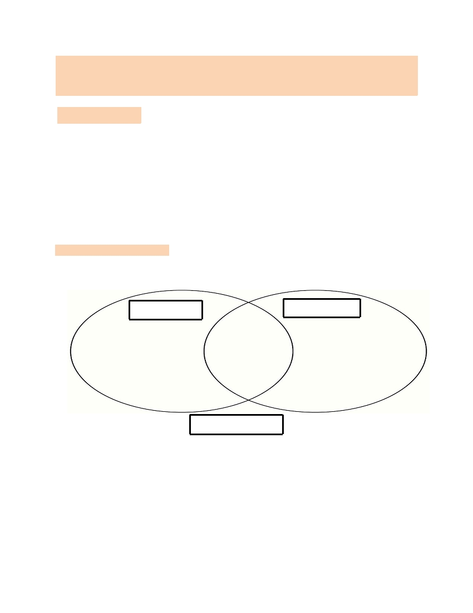
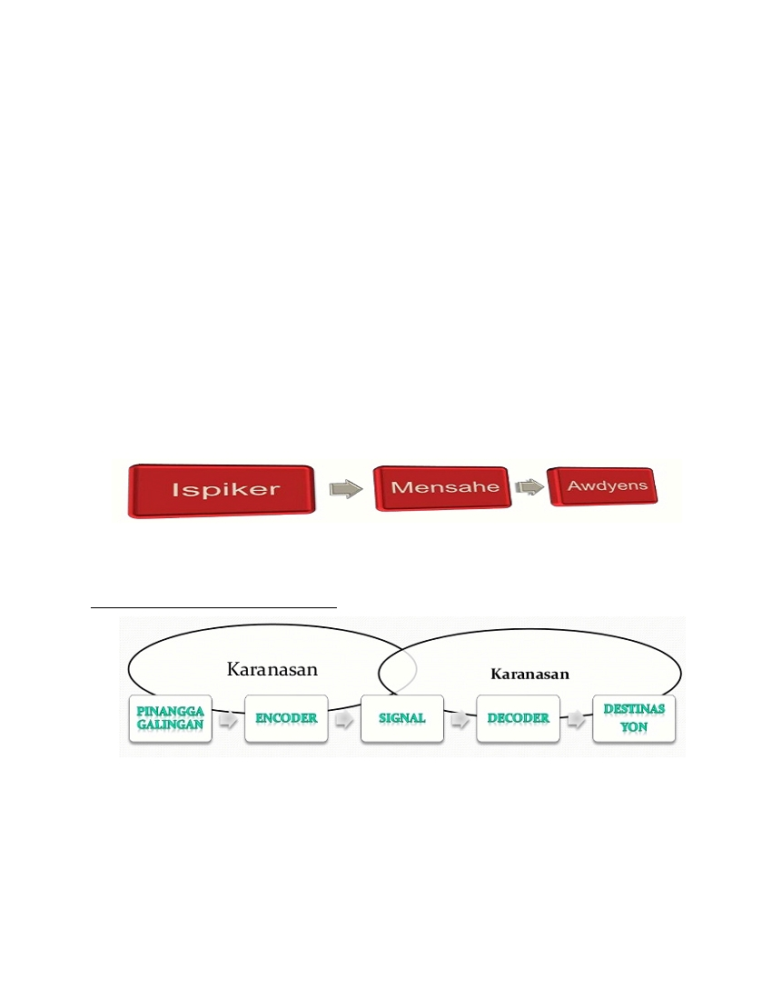
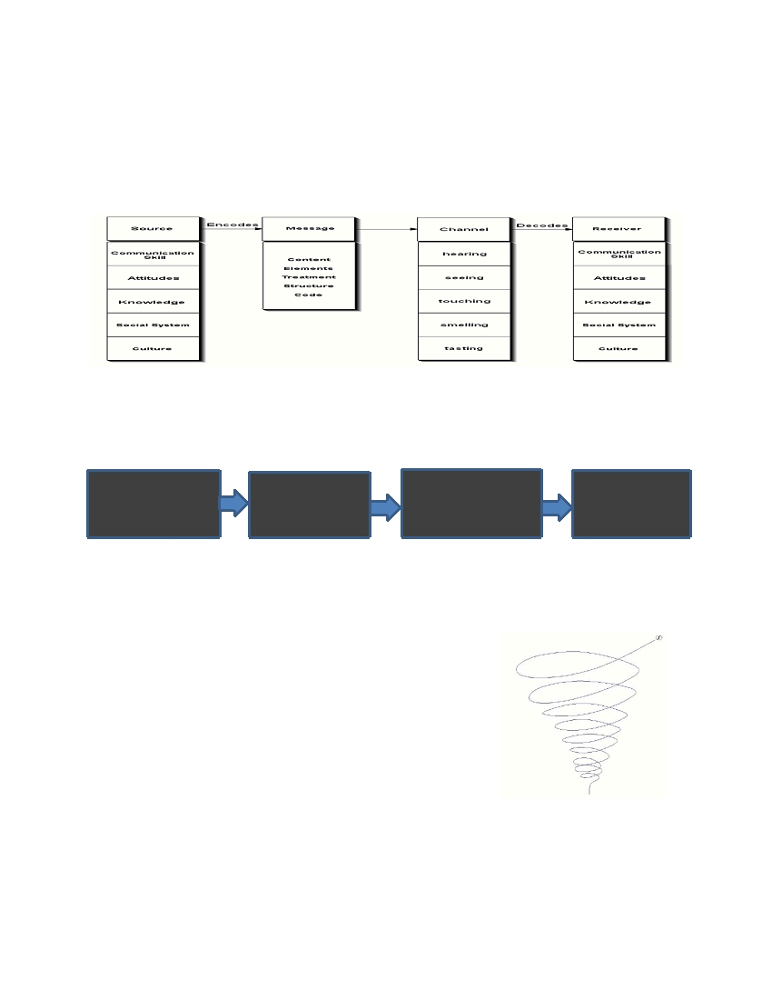
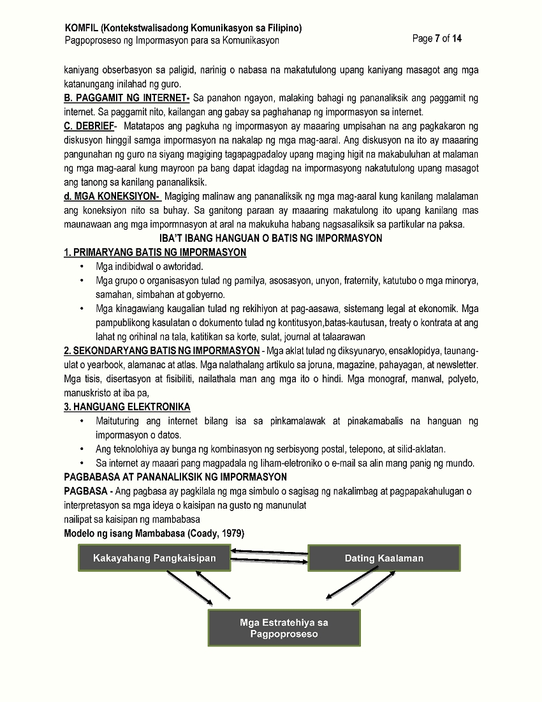
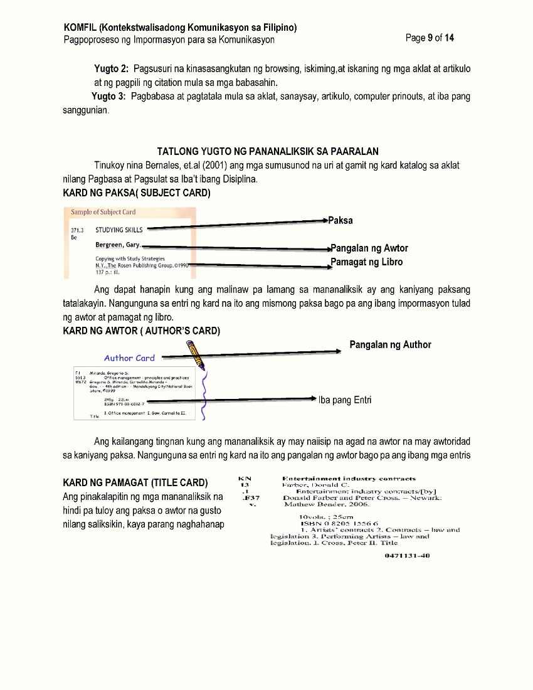
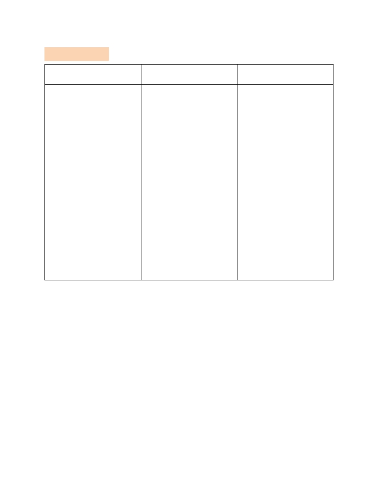

KOMFIL (Kontekstwalisadong Komunikasyon sa Filipino)
Pagpoproseso ng Impormasyon para sa Komunikasyon
Page 1 of 14
Paksa: PAGPOPROSESO NG IMPORMASYON PARA SA KOMUNIKASYON
I. OBJECTIVE:
Sa pagtatapos ng aralin, ang mga mag-aaral ay inaasahang :
1.
Natutukoy ang mahahalagang sangkap na kailanga para sa epektibong komunikasyon o
pakikipagtalastasan;
2.
Naiuugnay sa praktikal na buhay ng tao sa bawat pagpoproseso ng impormasyon para sa
epektibong komunikasyon;
3.
Nakapipili ng batis (sources) ng impormasyon na mahalaga para sa iskolarling pag-aaral;
4.
Nakapagbabasa ng mga pananaliksik na nanggaling sa mahahalagang batis ng impormasyon; at
5.
Nakabubuo at nakapag-uugnay-ugnay ng mahahalagang impormasyon.
II. PRELIMINARY ACTIVITY
Panuto : Tukuyin ang pagkakaiba ng Teknolohiya at aklat gamit ang Venn Diagram.
PAGKAKAIBA
PAGKAKAIBA
PAGKAKAPAREHA
Gabay na tanong:
1. Ano ang benepisyong naibibigay ng paggamit ng aklat at Teknolohiya?
2. Ano ang dapat isaalang-alang sa paggamit ng aklat at teknolohiya?
3. Bilang mag-aaral, anong mga suliranin ang iyong nararanasan sa paggamit ng aklat at teknolohiya?
KOMFIL (Kontekstwalisadong Komunikasyon sa Filipino)
Pagpoproseso ng Impormasyon para sa Komunikasyon
Page 2 of 14
III. LESSON PROPER
4.1 Ano ang Komunikasyon?
Ang Komunikasyon ay Mula sa salitang Latin na “ communis” na nangangahulugang “karaniwan” o
“panlahat”. Isang proseso ng pagpapadala at pagtanggap ng impormasyon na maaaring berbal o di-berbal.
PAGPOPROSESO NG IMPORMASYON PARA SA KOMUNIKASYON
- Ayon kay Robin, kailanman ang tao’y hindi makakatagal na mamuhay nang sa ganang sarili lamang
niya (2001:23).
- Binigyang kahulugan ng iba’t ibang dalubhasa ang komunikasyon batay sa kanilang kinabibilangang
larangan.
� Atienza et.al 1990 – Tahasan itong binubuo ng dalawang panig: isang nagsasalita at isang
nakikinig na kapwa nakikibang ng pagkilos o lamangan.
� S.S Stevens – Ang komunikasyon ay ang napiling pagtugon ng organism sa anomang bagay
na nangangailangan ng pagkilos o reaksiyon.
� Green at Petty (Developing Language Skills) – Intensyonal o konsyus na paggamit ng
anomang simbolo upang makapagpadala ng katotohanan, ideya, damdamin, emosyon mula sa
isang indibidwal tungo sa iba.
� Webster Dictionary, 1987= Ito ay ang pagpapahayag; paghahatid o pagbibigay ng
impormasyon sa mabisang paraan; isang pakikipag-ugnayan pakikipagpalagayan o pakikipag-
unawaan.
� Verdeber, 1987- Ang komunikasyon ay paghahatid ng mahahalagang impormasyon sa
paraang masining upang maging mabisa at mahusay na maipahayag ng tao ang kaniyang
palagay o saloobin sa kaniyang kapwa
� Rodrigo, 2001- Ang komunikasyon ay ang paraan ng pagbibigay, paglilipat o pagsasalin ng
impormasyon, ideya, kaalaman, pilosopiya, prinsipyo, opinyon, katalinuhan, balita .
KAHALAGAHAN NG KOMUNIKASYON
� Kahalagahang Panlipunan- Sa pamamagitan ng mahusay na pakikipag-usap at pakiki-
salamuha sa iba, ang tao ay nakagagawa ng desisyon tungkol sa anomang bagay, sa kabuhayan,
relihiyon, edukasyon, at politika.
kaniyang propesyon ay magkakaroon ng katagumpayan ang kaniyang layunin sa maayos na
paglalahad ng nais ipabatid .
� Kahalagahang Pampulitika- Pagdating sa usapin ng pulitika pinakamahalaga ang komunikasyon
sapagkat ito ang gamit ng tao upang maging mabisa ang paghahatid na impormasyon,
SANGKAP NG KOMUNIKASYON
� Tagapaghatid/ Tagatanggap ng Impormasyon- Tumutukoy ito sa mga taong kasali sa
komunikasyon. Maaaring ang taong ito ay tagatanggap o tagapaghatid ng impormasyon
KOMFIL (Kontekstwalisadong Komunikasyon sa Filipino)
Pagpoproseso ng Impormasyon para sa Komunikasyon
Page 3 of 14
Mensahe - Nilalaman ng mensahe ang kaisipan, damdamin, ideya, pag-uugali at sentimiyento na
gustong maipabatid o maibahagi ng pinagmulan ng impormasyon.
Tsanel/ Daluyan- Ito ay tumutukoy sa midyum na dinadaluyan ng mensahe upang
maipaabot
sa
tagatanggap
mensahe.
Mayroong
dalawang
kategorya
ang
daluyan
o
tsanel.
a. Sensori – Daluyang Sensori ay ang paggamit ng paningin, pandinig,pang-amoy, panlasa
at pandama
b. Institusyonal- Soundwaves naman ay paggamit ng mga kasangkapan gaya ng sulat,
telegrama, e-mail, fax, machine, cellphone at iba pa.
Fidbak o Tugon- Ito ay tumutukoy sa naging sagot ng tagatanggap, maaaring berbal
o di berbal na pagsagot base sa impormasyon na natanggap mula sa tagapaghatid nito.
Pook / Tagpuan- Ito ay tumutukoy sa sikolohikal, sosyal, kultura, at pisikal na kalagayan ng
pinaggaganapan ng komunikasyon. Maaaring mapabilang dito ang damdamin, ugali, persepsyon, at
relasyon ng mga taong bahagi ng komunikasyon.
Mga Potensyal na Sagabal – Tumutukoy sa mga maaaring makasagabal sa pagbibigay kahulugan
sa mensahe. Sa wikang ingles ito ay tinatawag na communication noise o filter. Mauuri ito sa apat;:
a . Semantikong Sagabal- tumutukoy sa maaaring pagkakaiba ng interpretasyon sa
mensahe na nais ipabatid.
b. Pisikal na Sagabal – maaaring mula sa ayos o anyo ng paligid kung nasaan ang taong
nag-uusap, maaaring may distraksyong biswal, suliraning teknikal, maging ang kalagayan ng
mga taong nag-uusap.
c.Pisyolohikal na Sagabal – matatagpuan sa pangangatawan ng tagapaghatid o
tagatanggap ng mensahe, maaaring ito ay kapansanan sa kaniyang kakayahang makapagsalita,
makarinig o makakita.
d. Sikolohikal na Sagabal - tumutukoy ito sa kultura na kinalakihan ng tao na maaaring
maging sagabal sa interpretasyon ng mensahe.
Si Dell Hymes ay bumuo ng akronim na S.P.E.A.K.I.N.G upang mapadali ang paghubog sa mabisang
komunikasyon.
S- etting
- Saan nag-uusap?
P-articipant
- Sino ang kausap?
E-ends
- Ano ang layunin sa pag-uusap?
A-ct of Sequence
- Paano ang takbo ng usapan?
K-eys
- Pormal ba o Impormal ang usapan?
I-nstrumentalities
- Ano ang midyum ng usapan?
N-orms
- Ano ang paksa ng usapan?
G –enre
- Ano ang uri ng Pagpapahayag?
1. Setting (Saan nag-uusap) – Ang lugar o pook na ating kinaroroonan ay dapat isaalang-alang kung tayo
ay nakikipag-usap. Tayo ba ay nasa simbahan? Nasa palengke? Nasa paaralan?
Halimbawa: Marahang pakikipag-usap sa loob ng simbahan/ sambahan

KOMFIL (Kontekstwalisadong Komunikasyon sa Filipino)
Pagpoproseso ng Impormasyon para sa Komunikasyon
Page 4 of 14
2. Participant (Sino ang kausap) – Kausap ba natin ang ating magulang? Ang ating guro? Ang ating kamag-
aral o kaibigan? Maaari rin namang isang panauhin o isang bagong dalaw sa ating tahanan.
Halimbawa: Sino po sila? Ano po ang kailangan nila?
- Anong bahagi ng pananalita ang mga salitang sila at nila.
- Sa pagkakataong ito, papaano ginamit ang mga salitang ito
3. Ends (Ano ang Layunin ng Pag-uusap)- Matamo ang magandang bunga sa pakikipag-usap batay sa
paraan ng ating pakikipag-usap.
Halimbawa: Nay, maaari po bang dagdagan ang baon ko dahil may kagamitan po akong
dapat bilhin para sa aming proyekto .
- Tiyak na pagbibigyan o mauunawaan tayo ni Nanay kung ganyan ang himig ng pakikipag-usap.
4. Act of Sequence (Papaano ang takbo ng Pag-uusap) – May kaugnayan sa pagkakalahad ng mga
pangungusap at pangyayari sa simula. Binibigyang pansin ang interaksyon ng mga taong kasangkot sa
komunikasyon.
Halimbawa: Sa dalawang bagong estudyante na nag-uusap at nagkakilala sa unang pagkakataon
ay maaaring humantong sa pagiging matalik na pagkakaibigan sa huli.
5. Keys ( Pormal ba o Impormal ang Pag-uusap) – Pang-aangkop ng antas ng wikang gagamitin sa uri
ng tao at lugar na ating kausap. Dapat gamitin ang mga salitang pormal kung ang kausap natin ay mga
professional, matatanda, may mga edad na panauhin at sa mga pagtitipong pormal.
Halimbawa: Kung ikaw ay nasa pulong ng samahan ng mga magulang at guro at may ibig kang isangguni
tungkol sa bagay o proyektong kanilang pinag-uusapan, ito ang maaari mong sabihin,”Pangulo ,
iminumungkahi ko po ______”.
6. Instrumentalities ( Ano ang Midyum ng Pag-uusap) – May kaugnayan kung papaano natin
ipaparating ang mensahe sa ating kausap o sa kinauukulan.).
Halimbawa: Pansarili – Daluyan sensoria ng paghahatid ng mensahe na isinasagawa natin ng
harapan sa ating kausap, “Mayroon tayong ibig ipakiusap na pampersonal na bagay o kaya ay
mayroon tayong ipagtatapat na isang lihim”.
Pang-emergency – Pa-institusyonal ang paraan, na maaaring pa-cellphone,e-mail, fax, telephone
at iba pa. “ Paghingi ng saklolo kung tayo ay nasunugan, nilooban at iba pa.
7. Norms ( Ano ang paksa ng Pag-uusap) - Pagkakaroon ng sapat na kaaalaman sa paksang tinatalakay;
pagsasaalng-alang din sa pag-uukulan ng paksa. Iyon ba ay may kinalaman sa kasariang panlalake o
pambabae? May kinalaman rin ba iyon sa ating kurso o libangang ating hilig?
8. Genre ( Anong uri ng Pagpapahayag) - Nagsasalaysay, naglalarawan, naglalahad, nakikipagtalo o
nangangatwiran. Kinakailangan ang pag-unawa at pakikibagay sa kausap upang maiwasan ang
miskomunikasyon o hindi pagkakaintindihan.
Halimbawa: Suliranin: “ Hindi naisumite ng estudyante ang kanyang proyekto sa
Guro sa takdang panahon”.
Guro: “Ano? Nagdadahilan ka ba?”
Estudyante: “Ma’am,nagpapaliwanag lamang po ako.”
MGA KATEGORYA NG KOMUNIKASYON

KOMFIL (Kontekstwalisadong Komunikasyon sa Filipino)
Pagpoproseso ng Impormasyon para sa Komunikasyon
Page 5 of 14
1. Intrapersonal na Komunikasyon (Pansarili) - Uri ng komunikasyong pansarili na nagaganap sa isang
indibidwal lamang na mapapansin sa kanyang pagmumuni-muni, pag-iisip, meditasyon o pansariling
pagdedesisyon,
2. Intrapersonal na Komunikasyon (Pangkapwa) - Uri ng komunikasyon na nagaganap sa dalawa o higit
pang tao (tagapagsalita at tagapakinig).
3. Komunikasyong Pampubliko - Nagaganap ang ganitong uri ng komunikasyon sa harap ng maraming
mamamayan o tagapakinig.
4. Komunikasyon na Pangmadla - Ito ay uri ng komunikasyon na gumagamit ng iba’t ibang uri ng
teknolohiya, mass media, radyo, telebisyon at pahayagan.
5. Komunikasyong Pang-organisasyon- Ang ganitong uri ng komunikasyon ay nagaganap sa loob ng mga
organisasyon o samahan,
6. Komunikasyong Pangkultura- Ginagamit ang ganitong uri ng komunikasyon sa pagtatanghal o
pagpapakilala ng kultura ng pangkat ng mga tao.
7. Komunikasyong Pang-kaunlaran- Ang ganitong uri ay may kinalaman sa aspekto ng buhay ng tao sa
industriya, ekonomiya o anomang pangkabuhayan at pangkaunlaran.
MODELO AT PROSESO NG KOMUNIKASYON
1. Modelo ni Aristotle ng Komunikasyon
Nakasentro ang modelo ng komunikasyon ni Aristotle sa tagapagsalita papunta sa tagapakinig na
nagpapakita ng linear (linyar) na katangian ng komunikasyon. Ito ay maaaring magamit sa pasalita at pasulat
na komunikasyon.
2. Modelo ni Schramm ng Komunikasyon
Para kay Wilbur Schramm na tinaguriang “Father of Communication Study”, ang komunikasyon ay
isang hiwalay na disiplina kaya hiwalay niya itong pinag-aralan bilang disiplina o larangan na tutugon sa iba’t
ibang uri ng katanungan, Binigyang kahalagahan dito ang proseso ng komunikasyon bilang katangian
pangkaasalan ng tao. Siya rin ang nagpakilala ng proseso ng Encoding at Decoding – isang proseso ng two-
way communication pagitan ng tagapagpadala at tagatanggap ng mensahe. Dito niya inilahad ang
kahalagahan ng karanasan upang lubos na maunawaan ng naglalahad at tumatanggap ang senyas at
reaksyong binibigay.

KOMFIL (Kontekstwalisadong Komunikasyon sa Filipino)
Pagpoproseso ng Impormasyon para sa Komunikasyon
Page 6 of 14
3. Modelo ni Berlo ng Komunikasyon (SMCR)
Sa modeong ito ni Berlo, iisang daloy lamang ng komunikasyon ang nagaganap sapagkat walang
nabubuong feedback o balik-tugon sa panig ng tagatanggap ng mensahe. Nakabatay ito sa apat na payak
na elemento ng pakikipagtalastasan: SMCR (Sources-Message-Channel- Receiver). Gamit ang tsanel
patungo sa tagatanggap ay dumadaloy ang mensahe na naisa ipahatid ng tagapaghatid.
4. Modelo ni Laswell ng Komunikasyon
Sino ang naghahatid ng
Para kanino ang
Sa Paanong Paraan
Ano ang Epekto ng
mensahe ?
mensahe
ipapahatid ang mensahe
paghahatid ng
(TAGAPAGHATID)
(MENSAHE)
(MIDYUM)
Mensahe
(IMPAK )
Si Harold Lasweel ay isang political scientist na gumawa ng modelo ng komunikasyon na kakikitaan
ng mga dapat isaalang-alang na sangkap ng komunikasyon upang masigurado matiyak ang maaaring dulot
nito. Ipinapakita sa modelong ito ang katanungan na “sino ang nagsabi ng anong mensahe, na anong
dayuhan at ano ang magiging epekto nito?”
5. Modelo ni Dance ng Komunikasyon (Komunikasyong Helikal)
Ang pagiging dinamiko at fleksibol ng komunikasyon, dito ay malawak
ang kaugnayan ng mga nakalipaspatungo sa hinaharap. Samakatuwid,
ang proseso sa ganitong uri ng komunikasyon ay nagkakaroon ng
malaking gampanin ang lahat ng karanasan ng tagapaghatid at
tagatanggap ng mensahe, hindi napuputol o natitigil dahil ito ay
patuloy na umiinog at walang eksaktong simula at katapusan. Ayon
sa kanya, nagbabago ang modelo dahil sa komunikasyong
sitwasyon
PAGPILI NG HANGUAN (SOURCES) NG IMPORMASYON
Narito ang iba’t ibang paraan sa paghango ng impormasyon:
A. PAGTATALA - Isang kakayahang dapat taglayin ng mag-aaral sa kaniyang pananaliksik ay ang pagtatala
ng mga makabuluhang impormasyon. Sa pagtatalang ito kalakip ang mga impormasyong maaaring batay sa


KOMFIL (Kontekstwalisadong Komunikasyon sa Filipino)
Pagpoproseso ng Impormasyon para sa Komunikasyon
Page 8 of 14
MGA TEORYA NG PAGBABASA
1. Teoryang Bottom-up- Binibigyang-diin sa teoryang ito na ang pagbasa ay pagkilala sa mga serye ng
mga nakasulat na simbolo upang maibigay ang kaakibat nitong tunog.
2. Teoryang Top-Down- Nagsisimula sa kaisipan ng tagabasa (top) patungo sa teksto (down) sapagkat ang
dating kaalaman o prior knowledge ang nagpapasimula ng pagkilala sa teksto
Upang maunawaan ang teoryang ito, tunghayan ang tatlong impormasyon ayon kay Badayos (1999);
Impormasyong Semantika . Pagpapakahulugan sa mga salita at pangungusap.
Impormasyong Sintaktik (instruktura ng wika ). Tungkol sa pagkakaayos at instruktura ng wika,
Impormasyong Graphi (phonic). Tungkol sa ugnayan ng mga etra at mga tunog ng wika kasama
rito and impormasyon tungkol sa pagbabaybay na naghuhudyat ng kahulugan.
3.
Teoryang
Interaktibo
(Interactive)-
Ang
teksto
ay
kumakatawan
sa
wika
at
kaisipan
ng awtor at sa pag-unawa nito, ang isang mambabasa ay gumagamit ng kanyang kaalaman sa wika at mga
sariling konsepto o kaisipan.
MGA URI NG PAGBASA
1. ISKANING - Uri ng pagbasa na ang nagbabasa ay nagsasagawa ng paggalugad sa materyal na hawak
tulad ng pagbasa sa mga susing salita o key word, pamagat at subtitles. Dito, ang mahalagang salita ay hindi
binibigyan-pansin. Ang iskaning (scanning) ay isang uri ng pagbasa na nangangailangan hanapin ang isang
partikular na impormasyonsa aklat o sa anomang babasahin.
2. ISKIMING – ito ay pagsaklaw o mabilisang pagbasaupang makuha ang pangkalahatang ideya o
impresyon, o kaya ay pagpili mh materyal na baabasahin
3. PREVIEWING - Ang mambabasa ay hindi kaagad sa aklat o chapter tumitingin. Sinusuri muna ang
kabuoan at ang estilo at register ng wika ng sumulat.
4. KASWAL - Pagbasa ng pansamantala o di-palagian. Magaan ang pagbasa, halimbawa habang may
hinihintay o pampalipas ng oras
5. PAGBASANG PANG-IMPORMASYON - Ito ay pagbasang may layuning malaman ang impormasyon tulad
ng pagbasa sa pahayagan, sa hangaring malaman kung may pasok o wala.
6. MATIIM NA PAGBASA - Nangangailangan ito ng maingat na pagbasa na may layuning maunawaang
ganap ang binabasa para matugunan ang pangangailangan tulad ng reports, riserts at iba pa.
7. RE-READING O MULING PAGBASA - Paulit na binabasa kung ang binabasa ay mahirap unawain bunga
ng mahirap na talasalitaan o pagkakabuo ng pahayagan.
8. PAGTATALA - Ito ay pagbasang may kasamang pagtatala ng mga mahahalagang kaisipan o ideya bilang
pag-imbak ng impormasyon.
MAPANURING PAGBASA
TATLONG YUGTO NG PANANALIKSIK
Yugto 1: Panimulang paghahanap ng kard katalog, sangguniang aklat, bibliograpiya, indeks, at
hanguang elektroniko o internet

KOMFIL (Kontekstwalisadong Komunikasyon sa Filipino)
Pagpoproseso ng Impormasyon para sa Komunikasyon
Page 10 of 14
IV. ANALYSIS, APPLICATION, AND EXPLORATION
Panuto. Basahin at unawain mabuti ang bawat tanong. Piliin ang TAMA kung ang pahayag ay wasto at
MALI kung ang pahayag ay hindi wasto.
1. Ang modelo ni Dance sa usaping komunikasyon ay daynamiko at fleksibol
2. Ang sekundaryang batis ng impormasyon ay binubuo ng mga nakalimbag o nailathala na mga aklat,
pahayagan, magasin, tisis, disertasyon at iba pa.
3. Ang uri ng pagbasa na iskaning ay isang pasaklawo mabilisang pagbasa.
4. Ang kaswal na pagbabasa ay naglalayon ng maingat na pagbasa
5. Ang pagbasa ay nangangahulugang pagkilala sa mga simbolo o sagisag na nakalimbag at interpretasyon
ng mga ideya.
6. Ang pampublikong komunikasyon ay ginaganap at isinasagawa sa harap ng maramig tao.
7. Ang komunikasyong pangkaunlaran ay may kinalaman sa aspekto ng buhay ng tao sa industriya,
ekonomiya at anumang pangkabuhayan at pangkaunlaran.
8. Si Schramm ay tinaguriang “Father of Communication Study “.
9. Ang semantikong sagabal ay matatagpuan sa pangangatawan ng tagapaghatid o tagatanggap ng
mensahe, maaaring ito ay kapansanan sa kaniyang kakayahang makapagsalita, makarinig o makakita.
10. Ang Mensahe ay naglalaman ng kaisipan, damdamin, ideya, pag-uugali at sentimiyento na gustong
maipabatid o maibahagi ng pinagmulan ng impormasyon
V. GENERALIZATION
Panuto: Sagutan ang Gawain sa Libro ng Kontekstwalisadong Komunikasyon sa Filipino Pahina 49 at 62
hanggang 64 at ipasa ito bilang kahingian ng asignatura
VI. EVALUATION
Panuto. Basahiin at unawain ang bawat tanong, Piliin ang letra ng tamang sagot..
1.
Sa Speaking ni Dell Hymes ito ay tumutukoy sa lugar kung saan isinasagawa ang pakikipag-usap
a.
Act of Sequence
b.
Settings
c.
Participants
d.
Keys
2.
Uri ng pakikipagkomunikasyon na nagaganap sa dalawa o higit pang tao.
a.
Intrapersonal na komunikasyon
b.
Komunikasyong pangmadla
c.
Komunikasyong Pampubliko
d.
Interpersonal na komunikasyon
3.
Ito ay modelo ng komunikasyon kung saan walang nagaganap na feedback o tugon mula sa
tagatanggap ng mensahe .
a.
Modelo ni Dance
b.
Modelo ni Laswell
c.
Modelo ni Berlo
D Modelo ni Schramm

KOMFIL (Kontekstwalisadong Komunikasyon sa Filipino)
Pagpoproseso ng Impormasyon para sa Komunikasyon
Page 11 of 14
4.
Pagpili ng hanguan ng impormasyon na isa sa mga kakayahang dapat taglayin ng mga mag-aaral
sa kanilang pananaliksik .
a.
Magdebrief
b.
Pagtatala
c.
Paggamit ng Internet
d.
Mga koneksyon
5.
Batis ng impormasyon na ang pinaghahanguan ay mula sa indibidwal o awtoridad ,
a.
Primaryang batis ng impormasyon
b.
Sekondaryang Batis ng Impormasyon
c.
Hanguang Elektroniko
d.
Aklat
6.
Modelo ng komunikasyon na Ipinapakita ang katanungan na “sino ang nagsabi ng anong mensahe,
na anong dayuhan at ano ang magiging epekto nito?”
a.
Modelo ni Schramm
b.
Modelo ni Dance
c.
Modelo ni Laswell
d.
Modelo ni Berlo
7.
Nilalaman ng akronim na SETTINGS ni Dell Hymes na nakatuon sa layunin ng pakikipag-usap .
a.
Keys
b.
Instrumentalities
c.
Ends
d.
Norms
8.
Nilalaman ng akronim na SETTINGS ni Dell Hymes na nagpapahayag ng anong uri ng pakikipag-
usap ang isinagawa sa komunikasyon
a.
Ends
b.
Genre
c.
Act of Sequence
d.
Norms
9.
Potensyal na sagabal sa komunikasyon na tumutukoy sa kultura na kinalakihan ng tao na maaaring
maging sagabal sa interpretasyon ng mensahe.
a. Semantikong Sagalal
b. Pisyolohikal na Sagabal
c. Sikolohikal na Sagabal
d. Pisyolohikal na Sagabal
10. Ang akronim ni Dell Hymes na may kaugnayan sa paglalahad ng pangungusap at kung paano ang
takbo ng usapan.
a. Participants
b. Instrumentalities
c. Settings
d. Act of Sequence
11. Ito ay kategorya ng komunikasyon na sa pagtatanghal o pagpapakilala ng kultura ng pangkat ng tao.
a. Komunikasyong Pangmadla
b. Komunikasyong Pang-organisasyon
c. Komunikasyong Pangkaunlaran
d. Komunikasyong Pangkultura

KOMFIL (Kontekstwalisadong Komunikasyon sa Filipino)
Pagpoproseso ng Impormasyon para sa Komunikasyon
Page 12 of 14
12. Uri ng komunikasyong pansarili na nagaganap sa isang indibidwal lamang na mapapansin sa kanyang
pagmumuni-muni, pag-iisip, meditasyon o pansariling pagdedesisyon,
a. Intrapersonal
b. Komunikasyong pampubliko
c. Komunikasyong pang-organisasyon
d. Interpersonal na Komunikasyon
13. Uri ng komunikasyon na gumagamit ng iba’t ibang uri ng teknolohiya, mass media, radyo, telebisyon at
pahayagan
a. Komunikasyon Pnag-madla
b. Komunikasyong pampubliko
c. Interpersonal na Komunikasyon
d. Intrapersonal
14. Modelo ng komunikasyon na ang tagapagsalita papunta sa tagapakinig at nagpapakita ng linyar na
katangian ng komunikasyon.
a. Modelo ni Laswell
b. Modelo ni Aristotle
c. Modelo ni Schramm
d. Modelo ni Dance
15. Potensyal na sagabal na matatagpuan sa pangangatawan ng tagapaghatid o tagatanggap ng mensahe,
maaaring ito ay kapansanan sa kaniyang kakayahang makapagsalita, makarinig o makakita..
a. Pambansang Linggwa Franka
b. Sematikong Sgaabal
c. Pisyolohikal na Sagbal
d. Sikolohikal na Sagabal
16. Kahalagahan ng komunikasyon na sa pamamagitan ng mahusay na pakikipag-usap at pakikisalamuha
sa iba, ang tao ay nakagagawa ng desisyon tungkol sa anumang bagay, sa kabihayan, relihiyon, edulkasyon
at politiko.
a. Kahalagahang pangkabuhayan
b. Kahalagahang panlipunan
c. Kahalagahang pampulitika
d. Kahalagahang pampolitika
17. Sangkap ng Komunikasyon na tumutukoy sa mga taong kasali komunikasyon.
a. Mensahe
b. Tsanel o Daluyan
c. Tagpuan
d. Tagapaghatid o Tagatanggap ng Komunikasyon
18. Uri ng pagbasa na may layuning malaman ang impormasyon tulad ng pagbasa sa pahayagan, sa
hangaring malaman kung may pasok o wala.
a. Previewing
b. Kaswal na Pagbasa
c. Pagbasang pang-impormasyon
d. Matiim na Pagbasa
KOMFIL (Kontekstwalisadong Komunikasyon sa Filipino)
Pagpoproseso ng Impormasyon para sa Komunikasyon
Page 13 of 14
19. Uri ng pagbasa na tumutukoy sa mabilisang pagbasa upang makuha ang pangkalahatang ideya o
impresyon, o kaya ay pagpili mh materyal na baabasahin
a. Iskiming
b. Iskaning
c. Previewing
d. Pagtatala
20. Uri ng pagbasa na nangangailangan ng maingat na pagbasa na may layuning maunawaang ganap ang
binabasa para matugunan ang pangangailangan tulad ng reports, riserts at iba pa.
a. Previewing
b. Iskiming
c. Matiim na Pagbabasa
d. Iskaning
VII. ASSIGNMENT
Instruction. Basahin at unawain ang tanong, piliin ang letra ng tamang sagot.
1. Ang unang yugto sa pananaliksik ay ang pagbabasa at pagtatala mula sa aklat, sanaysay, artikulo,
computer prinouts, at iba pang sanggunian
a.
Tama
b.
Mali
2. Ang teoryang interaktibo ay kumakatawan sa wika at kaisipan ng awtor at sa pag-unawa nito. Ang isang
mambabasa ay gumagamit ng kanyang kaalaman sa wika atv mga sariling konsepto o kaisipan.
a.
Tama
b.
Mali
3. Ang re-reading o muling pagbasa ay pa-ulit na binabasa kung ang binabasa ay mahirap unawain bunga
ng mahirap na talasalitaan o pagkakabuo ng pahayagan
a. Tama
b. Mali
4.Ang teoryang Top-down ay nagbibigay diin na ang pagbasa ay pagkilala sa mga serye ng mga nakasulat
na simbolo upang maibigay ang kaakibat nitong tunog.
a. Tama
b. Mali
5. Ang sekondaryang batis ng impormasyon ay kumakatawan sa mga organisasyon tulad ng diksyunaryo,
ensayklopidya, yearbook at iba pa.
a. Tama
b. Mali

KOMFIL (Kontekstwalisadong Komunikasyon sa Filipino)
Introduksyon: Ang Pagtataguyod ng Wikang Pambansa sa Mas Mataas na
Page 14 of 14
Antas ng Edukasyon at Lagpas pa
V. ANSWER KEY
ANALYSIS, APPLICATION,
EVALUATION
ASSIGNMENT
AND EXPLORATION
1. Tama
1. B
1. B
2. Tama
2. D
2. A
3. Mali
3. C
3. A
4. Mali
4. B
4. B
5. Tama
5. A
5. A
6. Tama
6. C
7. Tama
7. C
8. Tama
8. B
9. Mali
9. C
10. Tama
10. D
11. D
12. A
13. A
14. B
15. C
16. B
17. D
18. C
19. A
20. C